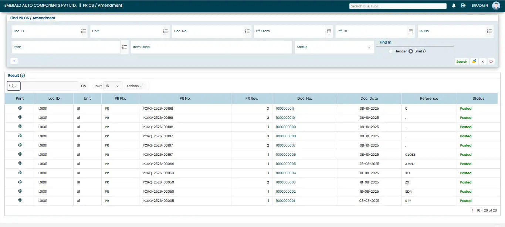
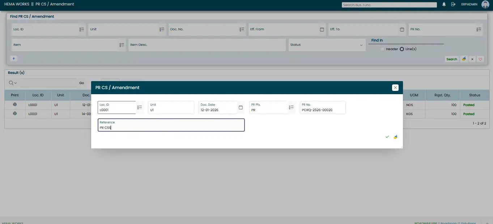
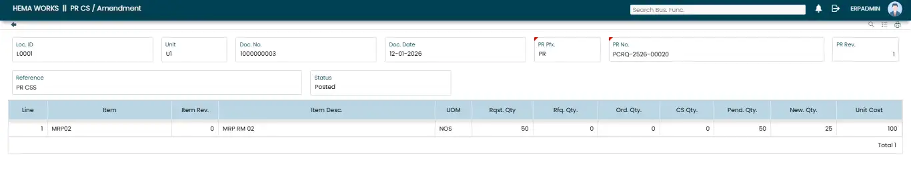
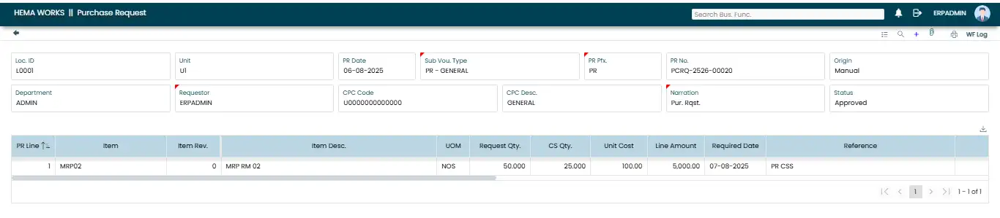

<div data-category="Purchase Order" data-title="Purchase Request Close short" data-updated="December 01, 2025" data-contributors="RoadmapIT" data-breadcrumb="Home,Purchase Order,Purchase Request Close short">
  <div class="page-content">
    <p>The Purchase Request close short form allows you to close short the Approved and Partial Purchase Request lines. It is made possible only when the particular request lines were open and not yet have been converted into Purchase Orders. Once the request is close shorted or cancelled, the requested qty in the requested bucket will be decreased in stocks.</p>

    <h5>Navigation path:</h5>
    <p class="fs-6">Supply Chain \ Purchasing \ Transaction \ PR Close short</p>

    

    <ul style="list-style-type: none; align-content: center">
      <li class="mouse-icon">Search screen displays the list of Purchase Request close short documents with the relevant details and its status.</li>
      <li class="mouse-icon">Click on search to filter all the records.</li>
      <li class="mouse-icon">User can filter the respective documents by entering the search parameters at the header.</li>
      <li class="mouse-icon">Using search, system displays the results relevant to the search parameters entered.</li>
      <li class="mouse-icon">On -click; the corresponding transaction record will be displayed.</li>
      <li class="mouse-icon">Using <i class="bi bi-eraser text-secondary"></i> icon, entered search parameters can be cleared.</li>
      <li class="mouse-icon">To close the screen, use <i class="bi bi-x-lg text-danger"></i> icon.</li>
      <li class="mouse-icon">
        By Clicking the
        <i class="bi bi-plus fs-4 mx-2 text-primary"></i>
        Add button we can create new Purchase Request close short by entering all the mandatory fields displayed in the Add dialog.
      </li>
    </ul>

    

    <ul style="list-style-type: none; align-content: center">
      <li class="mouse-icon">Choose the Unit location LOV.</li>
      <li class="mouse-icon">Choose the PR Document.</li>
      <li class="mouse-icon">Text to enter the Reference value.</li>
      <li class="mouse-icon">
        Click
        <i class="bi bi-check-lg fs-4 mx-1 text-success"></i>
        button to create the new document and control navigates to transaction screen.
      </li>
    </ul>

    

    <ul style="list-style-type: none; align-content: center">
      <li class="mouse-icon">Click Load PR to load the line details of the PR to be close shorted.</li>
      <li class="mouse-icon">Click on Close short button, Document Close shorted.</li>
      <li class="mouse-icon">The close short quantity will be updated in the PR lines.</li>
    </ul>

    
  </div>
</div>
